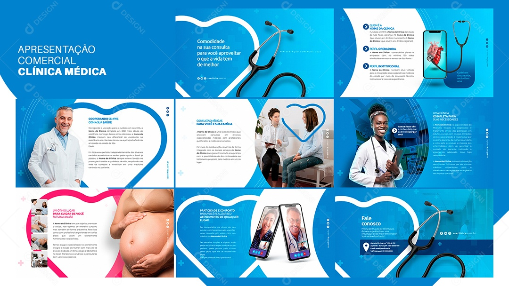

Clinica Médica
Clinica Médica
Bem-vindo à Clínica Médica
A Clínica Médica é referência em cuidados médicos integrados, oferecendo um ambiente acolhedor e moderno para atender você e sua família. Com uma equipe altamente qualificada e apaixonada pelo que faz, nosso objetivo é garantir sua saúde e bem-estar em todas as fases da vida.
Nossos Serviços:
Estamos prontos pra atender você com todo o cuidado
e dedicação que você merece.
Apresentação da Nossa Filial em São Paulo:

Oferecemos suporte completo por ligação, aplicativo ou,
principalmente, por telemedicina, nossa forma mais rápida de atendimento,
promovendo saúde e segurança sem fronteiras..

| Segunda a Sexta | Das 06h às 20h |
| Sábados | Das 08h às 18h |
| Domingos e Feriados | Fechado |